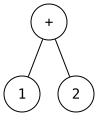
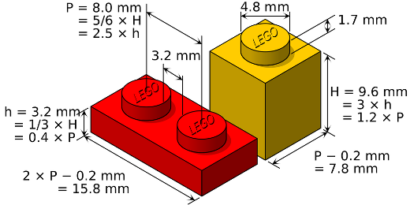
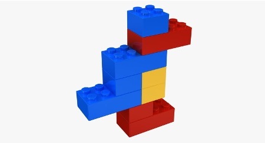

9 Operational Semantics
In earlier lectures, we explored regular expressions, context-free grammars, and parsing. Starting from a raw, unstructured sequence of symbols like "1+2", we first use regular expressions to break the string into tokens—for example, [Int 1; Plus; Int 2]. Then, using a context-free grammar for expressions, we parse these tokens into an abstract syntax tree (AST), such as Plus(Int 1, Int 2).

At this stage, we know the input "1+2" is syntactically valid. If the input contained a syntax error—like "1++2"—the parser would fail to construct an AST.However, recognizing that "1+2" is well-formed is not the same as understanding its meaning. To answer what the expression actually does, we turn to formal semantics. Formal semantics provides a mathematical description of program behavior—what a program computes and how it executes.
In short, while parsing gives us a structured representation like Plus(Int 1, Int 2), we still need a way to interpret that structure. Operational semantics is one approach that explains how such expressions evaluate and what they mean.
9.1 What is Operational Semantics?
Operational semantics explains how programs execute on an abstract machine, providing a precise mathematical account of program meaning.
Define behavior clearly using inference rules instead of ambiguous natural language
Build interpreters, where each rule corresponds to a case in evaluation
Prove properties such as correctness or termination
Compare language designs, like lexical vs. dynamic scoping
Specify evaluation order, including which expressions are evaluated and when
In short: syntax describes how programs are written; semantics explains what they do.
In this lecture, we will define an operational semantics for Micro-OCaml and develop an interpreter for it along the way. The approach is to use rules to define a judgment:
e ⇒ vThis judgment reads: "expression e evaluates to value v."
9.2 Rules and Judgement
In the context of operational semantics, the central idea is to describe program execution using rules that establish when a certain statement about a program is true. This statement is called a judgment.
expression e evaluates to value v
or command c executes to produce a new state
The approach is to define these judgments using inference rules. Each rule tells you how to derive a valid judgment from simpler ones. In other words, rules specify how execution proceeds step by step.
1. Show how 1 evaluates to 1
2. Show how 2 evaluates to 2
3. Combine those results to conclude 1 + 2 evaluates to 3
By repeatedly applying such rules, we build a derivation tree whose root is the final judgment. This tree is a formal proof of how the program executes.
So, the key idea is:
Judgments describe execution outcomes
Inference rules define when those judgments are valid
Derivations (rule applications) explain how a program runs step by step
9.3 Defining the Semantics with Inference Rules
We use inference rules to define the judgment e ⇒ v. An inference rule has the form: \frac{H1 \quad H2 \quad ... \quad Hn} {C}
which reads: if hypotheses H1, H2, ..., Hn all hold, then conclusion C holds. Formally: H1 ^ H2 ^ ... ^ Hn ⇒ C.
For example, the classic syllogism: \frac{ \forall{}x(Man(x) \rightarrow{} Mortal(x)), Man(Socrates)} {∴ Mortal(Socrates)}
Inference rules are like Lego blocks: each rule is a small, well-defined piece that can be combined with others to build something larger. By applying these rules step by step, we construct bigger structures—first simple expressions, then more complex ones, and eventually entire programs.


This process can be tedious, since every step must follow the rules precisely. But that discipline is exactly what makes it powerful: nothing is improvised, skipped, or altered—no “gluing” or “cutting corners.” Every result is built purely from valid rule applications. Because the rules can be applied recursively, they scale naturally from small examples to large programs. In this way, inference rules provide a systematic and reliable method for assigning meaning to programs of any size.9.4 Micro-OCaml Expression Grammar
The expression grammar for the language we will study (Micro-OCaml) is:
e ::= x | n | e + e | let x = e1 in e2where x is a variable identifier and n is an integer literal.
The corresponding OCaml AST type is:
type id = string
type exp =
| Ident of id (* x *)
| Num of int (* n *)
| Plus of exp * exp (* e + e *)
| Let of id * exp * exp (* let x = e1 in e2 *)9.5 Rules of Inference
9.5.1 Num
The rule for a numeric literal is an axiom — a number evaluates to itself: \frac{} {n \Rightarrow{} n} This rule corresponds directly to interpreter code:
match e with
| Num n -> n9.5.2 Sum
The rule for addition requires both subexpressions to evaluate, then sums the results: \frac{e1 \Rightarrow{} n1 \quad e2 \Rightarrow{} n2 \quad n3 \; is \; n1+n2} {e1 + e2 \Rightarrow{} n3}
This rule corresponds directly to interpreter code:
match e with
| Plus (e1,e2) ->
let n1 = eval e1 in
let n2 = eval e2 in
let n3 = n1 + n2 in
n39.5.3 Let
The rule for let expressions uses substitution: evaluate e1 to a value v1, then substitute v1 for x in e2 (written e2{v1/x}), and evaluate the result: \frac{e1 \Rightarrow{} v1 \quad e2\{v1/x\} \Rightarrow{} v2} {\texttt{let x = e1 in e2} \Rightarrow{} v2}
The notation e2{v1/x} means: replace all free occurrences of x in e2 with the value v1.
This maps directly to interpreter code using a subst helper:
match e with
| Let (x,e1,e2) ->
let v1 = eval e1 in
let e2' = subst v1 x e2 in
let v2 = eval e2' in
v29.6 Derivations
Pick a rule whose conclusion matches the goal
Recursively prove each hypothesis of that rule
Repeat until all leaves are axioms
Example: Show that let x = 4 in x+3 ⇒ 7
Using the let-rule, we need to show 4 ⇒ 4 and x+3{4/x} ⇒ 7, i.e., 4+3 ⇒ 7. For the addition, we need 4 ⇒ 4, 3 ⇒ 3, and 7 is 4+3. Full derivation:
4 ⇒ 4 3 ⇒ 3 7 is 4+3
----------------------------
4 ⇒ 4 4+3 ⇒ 7
---------------------------------
let x = 4 in x+3 ⇒ 7Quiz 1: What is the correct derivation of the following judgment?
2 + (3 + 8) ⇒ 13
(a)
2 ⇒ 2 3 + 8 ⇒ 11
---------------------
2 + (3 + 8) ⇒ 13
(b)
3 ⇒ 3 8 ⇒ 8 11 is 3+8
---------------------------------------------
2 ⇒ 2 3 + 8 ⇒ 11 13 is 2+11
-----------------------------
2 + (3 + 8) ⇒ 13
(c)
3 ⇒ 3 8 ⇒ 8
--------------
3 + 8 ⇒ 11 2 ⇒ 2
--------------------------
2 + (3 + 8) ⇒ 13
Quiz 1: What is the correct derivation of the following judgment?
2 + (3 + 8) ⇒ 13(a)
2 ⇒ 2 3 + 8 ⇒ 11
---------------------
2 + (3 + 8) ⇒ 13(b)
3 ⇒ 3 8 ⇒ 8 11 is 3+8
---------------------------------------------
2 ⇒ 2 3 + 8 ⇒ 11 13 is 2+11
-----------------------------
2 + (3 + 8) ⇒ 13(c)
3 ⇒ 3 8 ⇒ 8
--------------
3 + 8 ⇒ 11 2 ⇒ 2
--------------------------
2 + (3 + 8) ⇒ 13Answer: (b).
9.7 Definitional Interpreter
The style of the inference rules lends itself directly to implementation as a recursive function. Each rule becomes a match case:
let rec eval (e:exp) : value =
match e with
Ident x -> (* no rule — free variables have no value *)
failwith "no value"
| Num n -> n
| Plus (e1,e2) ->
let n1 = eval e1 in
let n2 = eval e2 in
let n3 = n1 + n2 in
n3
| Let (x,e1,e2) ->
let v1 = eval e1 in
let e2' = subst v1 x e2 in
let v2 = eval e2' in
v2Notice there is no rule for Ident x in the substitution-based semantics — by the time we evaluate a let body, all free variables have already been substituted away.
Derivation trees mirror interpreter call trees. For example, the derivation of let x = 4 in x + 3 ⇒ 7 has the same structure as the recursive evaluation calls made by the interpreter.
eval Num 4 ⇒ 4 eval Num 3 ⇒ 3 7 is 4+3
----------------------------
eval Num 4 ⇒ 4 eval (subst 4 "x" Plus(Ident("x"),Num 3)) ⇒ 7
-------------------------------------------------------------
eval Let("x", Num 4, Plus(Ident("x"), Num 3)) ⇒ 7Every step in the proof corresponds exactly to a recursive call in the evaluator.
9.8 Semantics Defines Program Meaning
In operational semantics, we write
e ⇒ vto mean that expression e evaluates to value v. This judgment holds if and only if there exists a proof (also called a derivation) demonstrating it.
Proofs are derivations: they are structured trees where axioms appear at the leaves, and inference rules are applied step by step up to the root.
No proof exists: if no derivation can be constructed, then there is no value v such that e ⇒ v.
Construction is bottom-up: proofs are built from the leaves toward the root in a goal-directed manner, reflecting how evaluation proceeds.
From this, we define the evaluation function:
eval e = { v | e ⇒ v }Since our semantics is deterministic, each expression e has at most one corresponding value v. Therefore, an expression e means exactly v.
In other words, the semantics assigns a precise mathematical meaning to every valid program: it tells us exactly what value the program computes.
9.9 Environment-style Semantics
The substitution-based semantics is elegant but not close to how real interpreters work. An alternative is to use an environment.
Substitution semantics: as we evaluate, we replace all occurrences of variable x with the value it is bound to (rewriting the AST)
Environment semantics: as we evaluate, we maintain an explicit map from variables to values (like a symbol table), and look up variables as we encounter them
The environment-based approach is more efficient and closer to real implementations.
9.9.1 Environments
A value v — the value the variable is bound to (like a stack frame entry)
Undefined — the variable has not been declared
An environment can be visualized as a table. For example, if A maps x to 0 and y to 2, then: A(x) is 0, A(y) is 2, and A(z) is undefined.
9.9.2 Notation and Operations on Environments
• is the empty environment (maps nothing)
A, x:v is the environment that extends A with a mapping from x to v; sometimes written just x:v instead of •, x:v
Lookup A(x) is defined as:
•(x) = undefined
v if x = y
(A, y:v)(x) = A(x) if x <> y and A(x) defined
undefined otherwiseThe most-recently-added binding for a variable shadows earlier ones, just like nested scopes in OCaml.
9.9.3 Implementing Environments in OCaml
An environment is represented as an association list — a list of (id, value) pairs:
type env = (id * value) list
let extend env x v = (x,v)::env
let rec lookup env x =
match env with
[] -> failwith "undefined"
| (y,v)::env' ->
if x = y then v
else lookup env' xextend prepends a new binding to the front (shadowing older bindings). lookup searches the list from the front, returning the first match.
9.10 Semantics with Environments
The environment semantics changes the judgment from e ⇒ v to:
A; e ⇒ vwhere A is the current environment. The idea is that A provides values for the free identifiers in e.
9.10.1 Environment-style Rules
The rules are extended to thread the environment through evaluation.
Variable lookup — look up x in the environment: \frac{A(x) = v} {A;\, x \Rightarrow v}
Numeric literal — a number evaluates to itself (environment unused): \frac{} {A;\, n \Rightarrow n}
Addition — evaluate both subexpressions in the same environment: \frac{A;\, e_1 \Rightarrow n_1 \quad A;\, e_2 \Rightarrow n_2 \quad n_3 \text{ is } n_1+n_2} {A;\, e_1 + e_2 \Rightarrow n_3}
Let — evaluate e1 in A, then evaluate e2 in A extended with x bound to v1: \frac{A;\, e_1 \Rightarrow v_1 \quad A, x{:}v_1;\, e_2 \Rightarrow v_2} {A;\, \texttt{let } x = e_1 \texttt{ in } e_2 \Rightarrow v_2}
Key difference from substitution semantics: instead of rewriting e2, we pass an extended environment to the recursive call.
9.10.2 Definitional Interpreter with Environments
let rec eval env e =
match e with
Ident x -> lookup env x
| Num n -> n
| Plus (e1,e2) ->
let n1 = eval env e1 in
let n2 = eval env e2 in
let n3 = n1 + n2 in
n3
| Let (x,e1,e2) ->
let v1 = eval env e1 in
let env' = extend env x v1 in
let v2 = eval env' e2 in
v2Compare to the substitution version: Ident x now uses lookup instead of failwith, and Let uses extend instead of subst.
Quiz 2: What is the correct derivation of the following judgment?
•; let x=3 in x+2 ⇒ 5
(a)
x ⇒ 3 2 ⇒ 2 5 is 3+2
-------------------
3 ⇒ 3 x+2 ⇒ 5
-----------------------
let x=3 in x+2 ⇒ 5
(b)
x:3; x ⇒ 3 x:3; 2 ⇒ 2 5 is 3+2
-----------------------------
•; 3 ⇒ 3 x:3; x+2 ⇒ 5
------------------------------
•; let x=3 in x+2 ⇒ 5
(c)
x:2; x ⇒ 3 x:2; 2 ⇒ 2 5 is 3+2
--------------------------
•; let x=3 in x+2 ⇒ 5
Quiz 2: What is the correct derivation of the following judgment?
•; let x=3 in x+2 ⇒ 5(a)
x ⇒ 3 2 ⇒ 2 5 is 3+2
-------------------
3 ⇒ 3 x+2 ⇒ 5
-----------------------
let x=3 in x+2 ⇒ 5(b)
x:3; x ⇒ 3 x:3; 2 ⇒ 2 5 is 3+2
-----------------------------
•; 3 ⇒ 3 x:3; x+2 ⇒ 5
------------------------------
•; let x=3 in x+2 ⇒ 5(c)
x:2; x ⇒ 3 x:2; 2 ⇒ 2 5 is 3+2
--------------------------
•; let x=3 in x+2 ⇒ 5Answer: (b). The let-rule requires •; 3 ⇒ 3 (evaluating e1 in the empty environment) and x:3; x+2 ⇒ 5 (evaluating e2 in the extended environment). Option (a) omits the environment entirely. Option (c) uses the wrong binding x:2 instead of x:3.
9.11 Adding Conditionals to Micro-OCaml
We extend the language with boolean values, an eq0 test, and if expressions:
e ::= x | v | e + e | let x = e in e
| eq0 e | if e then e else e
v ::= n | true | falseThe OCaml types become:
type value =
| Int of int
| Bool of bool
type exp =
| Val of value
| ... (* as before *)
| Eq0 of exp
| If of exp * exp * exp9.11.1 Rules for Eq0 and Booleans
Boolean literals are axioms — they evaluate to themselves: \frac{}{A;\, \texttt{true} \Rightarrow \texttt{true}} \qquad\qquad \frac{}{A;\, \texttt{false} \Rightarrow \texttt{false}}
eq0 tests whether an expression evaluates to zero: \frac{A;\, e \Rightarrow 0} {A;\, \texttt{eq0}\, e \Rightarrow \texttt{true}} \qquad\qquad \frac{A;\, e \Rightarrow v \quad v \neq 0} {A;\, \texttt{eq0}\, e \Rightarrow \texttt{false}}
9.11.2 Rules for Conditionals
Only one branch is evaluated, depending on the condition: \frac{A;\, e_1 \Rightarrow \texttt{true} \quad A;\, e_2 \Rightarrow v} {A;\, \texttt{if}\; e_1\; \texttt{then}\; e_2\; \texttt{else}\; e_3 \Rightarrow v} \frac{A;\, e_1 \Rightarrow \texttt{false} \quad A;\, e_3 \Rightarrow v} {A;\, \texttt{if}\; e_1\; \texttt{then}\; e_2\; \texttt{else}\; e_3 \Rightarrow v}
This captures the short-circuit behavior of conditionals: e3 is never evaluated when the condition is true, and vice versa.
Quiz 3: What is the correct derivation of the following judgment?
•; if eq0 3-2 then 5 else 10 ⇒ 10
(a)
• ; 3 ⇒ 3 • ; 2 ⇒ 2 3-2 is 1
-----------------------
•; eq0 3-2 ⇒ false •; 10 ⇒ 10
---------------------------------------
•; if eq0 3-2 then 5 else 10 ⇒ 10
(b)
3 ⇒ 3 2 ⇒ 2 3-2 is 1
---------------
eq0 3-2 ⇒ false 10 ⇒ 10
------------------------------
if eq0 3-2 then 5 else 10 ⇒ 10
(c)
•; 3 ⇒ 3 •; 2 ⇒ 2 3-2 is 1
---------
•; 3-2 ⇒ 1 1 ≠ 0
------------------
•; eq0 3-2 ⇒ false •; 10 ⇒ 10
----------------------------------
•; if eq0 3-2 then 5 else 10 ⇒ 10
Quiz 3: What is the correct derivation of the following judgment?
•; if eq0 3-2 then 5 else 10 ⇒ 10(a)
• ; 3 ⇒ 3 • ; 2 ⇒ 2 3-2 is 1
-----------------------
•; eq0 3-2 ⇒ false •; 10 ⇒ 10
---------------------------------------
•; if eq0 3-2 then 5 else 10 ⇒ 10(b)
3 ⇒ 3 2 ⇒ 2 3-2 is 1
---------------
eq0 3-2 ⇒ false 10 ⇒ 10
------------------------------
if eq0 3-2 then 5 else 10 ⇒ 10(c)
•; 3 ⇒ 3 •; 2 ⇒ 2 3-2 is 1
---------
•; 3-2 ⇒ 1 1 ≠ 0
------------------
•; eq0 3-2 ⇒ false •; 10 ⇒ 10
----------------------------------
•; if eq0 3-2 then 5 else 10 ⇒ 10Answer: (c). We must show •; 3-2 ⇒ 1 by the addition/subtraction rule (using 3 ⇒ 3, 2 ⇒ 2, 1 is 3-2), then derive •; eq0 3-2 ⇒ false because 1 ≠ 0, then apply the if-false rule to conclude with •; 10 ⇒ 10. Option (a) skips the intermediate derivation of 3-2 ⇒ 1. Option (b) omits the environment from all judgments.
9.11.3 Updating the Interpreter for Conditionals
let rec eval env e =
match e with
Ident x -> lookup env x
| Val v -> v
| Plus (e1,e2) ->
let Int n1 = eval env e1 in
let Int n2 = eval env e2 in
let n3 = n1+n2 in
Int n3
| Let (x,e1,e2) ->
let v1 = eval env e1 in
let env' = extend env x v1 in
let v2 = eval env' e2 in
v2
| Eq0 e1 ->
let Int n = eval env e1 in
if n=0 then Bool true else Bool false
| If (e1,e2,e3) ->
let Bool b = eval env e1 in
if b then eval env e2
else eval env e39.12 Adding Closures to Micro-OCaml
We extend the language with first-class functions:
e ::= x | v | e + e | let x = e in e
| eq0 e | if e then e else e
| e e | fun x -> e
v ::= n | true | false | (A, λx.e)A closure (A, λx.e) pairs a function body e (with parameter x) with the environment A at the time the function was created.
The OCaml types become:
type value =
| Int of int
| Bool of bool
| Closure of env * id * exp (* environment + parameter + body *)
type exp =
| Val of value
| If of exp * exp * exp
| ... (* as before *)
| Call of exp * exp
| Fun of id * exp9.12.1 Rules for Closures: Lexical (Static) Scoping
Creating a function captures the current environment A: \frac{} {A;\, \texttt{fun}\; x \to e \Rightarrow (A,\, \lambda x.\, e)}
Calling a function evaluates the body using the closure’s environment A’ (not the caller’s environment), extended with the argument: \frac{A;\, e_1 \Rightarrow (A{}’,\, \lambda x.\, e) \quad A;\, e_2 \Rightarrow v_1 \quad A{}’, x{:}v_1;\, e \Rightarrow v} {A;\, e_1\; e_2 \Rightarrow v}
This is lexical (static) scoping: the function’s free variables are resolved in the environment where the function was defined, not where it is called.
9.12.2 Rules for Closures: Dynamic Scoping
For contrast, dynamic scoping ignores the captured environment:
Creating a function stores the empty environment: \frac{} {A;\, \texttt{fun}\; x \to e \Rightarrow (\bullet,\, \lambda x.\, e)}
Calling a function uses the caller’s current environment A: \frac{A;\, e_1 \Rightarrow (\bullet,\, \lambda x.\, e) \quad A;\, e_2 \Rightarrow v_1 \quad A, x{:}v_1;\, e \Rightarrow v} {A;\, e_1\; e_2 \Rightarrow v}
With dynamic scoping, a function’s free variables resolve to whatever is in scope at the call site — which leads to surprising behavior and is why most modern languages use lexical scoping.
9.12.3 Lexical vs. Dynamic Scoping: Example
Consider the following program:
let x = 1 in
let f = fun y -> x + y in
let x = 2 in
f 10The key question is: which x does f see when called — the x = 1 from when f was defined, or the x = 2 from when f is called?
Under lexical scoping, f captures the environment at its definition site, where x = 1. The closure stores ({x:1}, λy. x+y). Later, let x = 2 adds a new binding to the outer environment, but this does not affect the closure — f already captured x:1 and will always use that. When f 10 is called, the body x+y is evaluated in the closure’s environment extended with y:10, ignoring the outer x:2:
let x = 1 in ... ⟹ outer env = {x:1}
f = fun y -> x+y ⟹ closure ({x:1}, λy. x+y) (* x:1 frozen in closure *)
let x = 2 in ... ⟹ outer env = {x:2, x:1} (* does NOT change closure *)
f 10 ⟹ evaluate (x+y) in {y:10, x:1} = 11
(* uses closure's env, not outer env *)Under dynamic scoping, f captures no environment (stores •). When f 10 is called, the body x+y is evaluated in the caller’s current environment extended with y:10. At the call site, x = 2 is the most recent binding, so that is what f sees:
let x = 1 in ... ⟹ outer env = {x:1}
f = fun y -> x+y ⟹ closure (•, λy. x+y) (* no env captured *)
let x = 2 in ... ⟹ outer env = {x:2, x:1}
f 10 ⟹ evaluate (x+y) in {y:10, x:2, x:1} = 12
(* uses caller's env — x:2 is the first match *)The same program produces 11 under lexical scoping and 12 under dynamic scoping. OCaml (and most modern languages) use lexical scoping.
9.13 Interpreter Exampl 1: Substitution Based Interpreter
OCaml REPL
type id = string;; type num = int;; type exp = | Ident of id | Num of num | Plus of exp * exp | Let of id * exp * exp ;; (* substitute x in e2 with e1 *) let rec subst x e1 e2 = match e2 with | Ident y -> if x=y then e1 else e2 | Num c -> Num c | Plus(el,er) -> Plus(subst x e1 el, subst x e1 er) | Let(y,ebind,ebody) -> if x=y then Let(y, subst x e1 ebind, ebody) else Let(y, subst x e1 ebind, subst x e1 ebody) ;; let rec eval exp = match exp with |Num n -> n |Plus(e1,e2)-> let n1 = eval e1 in let n2 = eval e2 in let n3 = n1 + n2 in n3 |Let (x,e1,e2) -> let e2' = subst x e1 e2 in let v2 = eval e2' in v2 |_->failwith "error 1" ;; (* let x = 10 in x + 10 *) eval (Let("x", Num 10, Plus(Ident "x",Num 10)));; (* let x = 10 in let y = x+1 in x+y;; *) let e2 =(Let("y", Plus(Ident "x", Num 1), Plus(Ident "x", Ident "y")));; eval (Let("x", Num 10, e2));; ;; [Output] type id = string type num = int type exp = Ident of id | Num of num | Plus of exp * exp | Let of id * exp * exp val subst : id -> exp -> exp -> exp = <fun> val eval : exp -> num = <fun> - : num = 20 val e2 : exp = Let ("y", Plus (Ident "x", Num 1), Plus (Ident "x", Ident "y")) - : num = 21
9.14 Interpreter Exampl 2: Environment Based Intepreter
OCaml REPL
type id = string (* v ::= n | true | false *) type value = Int of int | Bool of bool (* e ::= x | v | e + e | let x = e in e | eq0 e | if e then e else e *) type exp = | Ident of id | Val of value | Plus of exp * exp | Let of id * exp * exp | Eq0 of exp | GT of exp * exp | If of exp * exp * exp type env = (id * value) list let extend env x v = (x, v) :: env let rec lookup env x = match env with | [] -> failwith "Undefined variable" | (y, v) :: env' -> if x = y then v else lookup env' x let rec eval env e = match e with | Ident x -> lookup env x | Val v -> v | Plus (e1, e2) -> ( let v1 = eval env e1 in let v2 = eval env e2 in match (v1, v2) with | Int n1, Int n2 -> let n3 = n1 + n2 in Int n3 | _ -> failwith "Type Error") | Let (x, e1, e2) -> let v1 = eval env e1 in let env' = extend env x v1 in let v2 = eval env' e2 in v2 | Eq0 e1 -> ( match eval env e1 with | Int n -> if n = 0 then Bool true else Bool false | _ -> failwith "Type Error") | GT (e1, e2) -> ( match (eval env e1, eval env e1) with | Int v1, Int v2 -> if v1 >= v2 then Bool true else Bool false | _ -> failwith "Type Error") | If (e1, e2, e3) -> ( match eval env e1 with | Bool b -> if b then eval env e2 else eval env e3 | _ -> failwith "Type Error") ;; (* 20 + x *) eval [ ("x", Int 100) ] (Plus (Val (Int 20), Ident "x"));; (* let x = 10 in let x = x+ 1 in x+2;;*) eval [] (Let("x", Val(Int 10), Let("x", Plus(Ident "x", Val(Int 1)), Plus(Ident "x", Val(Int 2)))));; (*let x = 10 in Let y = x+ 1 in x+y;;\n\*) eval [] (Let("x", Val(Int 10), Let("y", Plus(Ident "x", Val(Int 1)), Plus(Ident "x", Ident "y"))));; (* let x = let x = 10 in x+1 in x+ 2*) eval [] (Let("x", (Let("x", Val(Int 10), Plus(Ident "x", Val(Int 1)))), Plus(Ident "x", Val(Int 2))));; (* if 4+2 = 0 then 100 else 200*) eval [] (If(Eq0 (Plus(Val(Int 4), Val(Int 2))), Val(Int 100), Val(Int 200)));; (* if 4+2 >= 6 then 100 else 200*) eval [] (If(GT (Plus(Val(Int 4), Val(Int 2)), Val(Int 6)), Val(Int 100), Val(Int 200)));; [Output] type id = string type value = Int of int | Bool of bool type exp = Ident of id | Val of value | Plus of exp * exp | Let of id * exp * exp | Eq0 of exp | GT of exp * exp | If of exp * exp * exp type env = (id * value) list val extend : ('a * 'b) list -> 'a -> 'b -> ('a * 'b) list = <fun> val lookup : ('a * 'b) list -> 'a -> 'b = <fun> val eval : (id * value) list -> exp -> value = <fun> - : value = Int 120 - : value = Int 13 - : value = Int 21 - : value = Int 13 - : value = Int 200 - : value = Int 100
9.15 Interpreter vs. Compiler
9.15.1 Compiler
The compiled program can then be executed to produce output.
Compilers often performoptimizations to make the program faster or more efficient.
Example:
int main() {
int a = 1 + 2 + 3 + 4;
return a;
}Compiling with GCC:
% gcc -c a.c -o a.o
% objdump -d a.oGenerated assembly:
push %rbp
mov %rsp,%rbp
movl $0xa,-0x4(%rbp)
mov -0x4(%rbp),%eax
pop %rbp
retHere, the compiler has already computed ‘1+2+3+4 = 10 (0xa)‘ at compile time.
9.15.2 Interpreter
Output is produced as the program executes.
No separate compiled program is produced; the interpreter directly runs the source code.
In summary, Compiler translates ahead of time, can optimize, produces a standalone executable. Interpreter translates on the fly, executes immediately, no separate executable. We will study interpreters in CMSC330 and compilers in CMSC430.
9.16 Summary
Operational semantics defines program meaning via inference rules that specify how expressions evaluate to values
A judgment e ⇒ v (or A; e ⇒ v with environments) holds iff a proof (derivation tree) can be constructed
Axioms have no hypotheses; rules derive conclusions from proved hypotheses
Derivations are trees built by goal-directed search; they have the same shape as interpreter call trees
Substitution semantics replaces variables with values in the AST; environment semantics maintains an explicit map and looks up variables
An environment is a partial function from identifiers to values, implemented as an association list
Closures pair a function with the environment at its definition site, enabling lexical scoping
Lexical scoping: free variables resolved in the definition environment; dynamic scoping: free variables resolved in the call environment